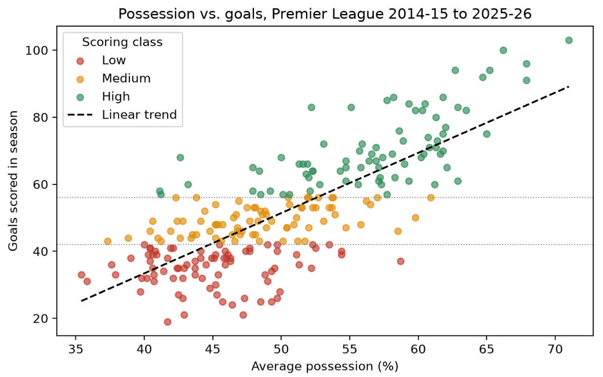

Machine Learning
Possession and Scoring in the Premier League
The question
Can a team’s average possession percentage predict how many goals it scores in a season? The project was inspired by Pep Guardiola, whose possession-heavy style at Manchester City came with six Premier League titles and a record 100-point season in 2017–18.
Data and method
The data come from Football Reference squad statistics: twelve seasons covering 35 clubs. Season goals were split into three quantile-based classes (Low, Medium and High), so each holds roughly one third of the team-seasons. Ties in goal totals at the cut points keep the split from being exactly equal. Then a multinomial logistic regression (scikit-learn) was trained with possession as its only feature, using an 80/20 train/test split.
| Scoring class | Goals scored | Team-seasons |
|---|---|---|
| Low | 19–42 | 82 |
| Medium | 43–56 | 79 |
| High | 57–103 | 79 |
Results
The model classified 29 of 48 held-out team-seasons correctly. Training accuracy was 62.5%, so there was no sign of overfitting, and five-fold cross-validation gave similar results (61.3% stratified, 60.0% grouped by club, 62.2% grouped by season).

| Class | Precision | Recall | F1 | Test cases |
|---|---|---|---|---|
| High | 0.69 | 0.75 | 0.72 | 12 |
| Low | 0.61 | 0.74 | 0.67 | 19 |
| Medium | 0.50 | 0.35 | 0.41 | 17 |
Takeaways
- The relationship is strong and stable. The within-season correlation exceeded 0.7 in ten of twelve seasons.
- Medium scorers are hard to predict. With one feature, the middle class only wins a narrow range of possession values. No High team was ever predicted as Low.
- Association is not causation. Possession likely reflects squad quality and tactical style, so this does not show that holding the ball more causes more goals.
Limitations
Possession is the only feature, so shot volume and quality, squad strength and style likely explain much of the remaining variation. The dataset is small (240 team-seasons) with only 48 test rows, and the train/test split was not stratified, which leaves High scorers underrepresented and their scores especially uncertain. Teams just either side of a class cut-off (42/43 or 56/57 goals) are treated as entirely different, and clubs repeat across seasons, so team-seasons are not independent. Squad quality was not measured, so the relationship shows association only.